05.3 MDP의 목표
에이전트가 오즈의 세계에서 달성해야 할 궁극적인 목적지인 할인 누적 수익(Discounted Return, Gt)과 미래 보상의 가치를 조율하는 할인율(Discount Factor, γ), 그리고 모든 상태에서 최고의 성과를 보장하는 최적 정책(Optimal Policy, π*)의 수학적 원리를 지니와 도로시의 즐거운 수업을 통해 정복해 봅시다!

그림 05-3-1 미래로 갈수록 할인율 γ에 의해 점차 가치가 할인되는 보상 상자들과 최적 정책 π*의 목표를 설명하는 지니와 도로시
05.3.1 일회성 과제와 지속적 과제
최적 정책을 수식으로 정확하게 정의하기 전에, 먼저 강화학습이 해결하고자 하는 문제 환경이 어떤 시간적 특성을 갖는지 구분해야 합니다.
MDP 문제는 시간 흐름과 종료 시점의 유무에 따라 크게 ‘일회성 과제(Episodic Task)’와 ‘지속적 과제(Continuous Task)’로 나뉩니다.
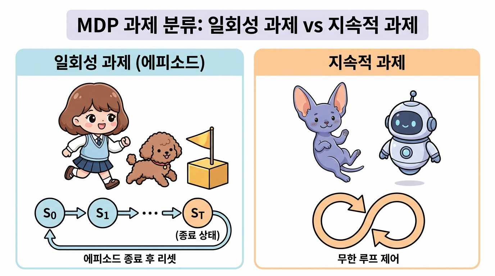
그림 05-3-2 MDP 과제의 두 가지 유형: 일회성 과제(에피소드 종료 및 리셋) vs 지속적 과제(무한 루프)
05.3.1.1 일회성 과제 (Episodic Task)와 에피소드(Episode)
일회성 과제는 명확한 ‘시작 상태’와 ‘종료 상태(Terminal State)’가 존재하는 문제입니다.
👧 도로시: “지니야! 미로를 탈출해서 출구(Goal) 깃발에 도착하면 게임 한 판이 끝나고 다시 시작 칸으로 돌아가잖아! 이것도 일회성 과제야?”
🧚 지니: “정답이야 도로시! 시작(S0)부터 끝(ST)까지 플레이하는 한 판의 전체 경험을 ‘에피소드(Episode)’라고 하고, 끝나면 깔끔하게 초기 상태로 리셋되는 문제를 일회성 과제(Episodic Task)라고 부른단다!”
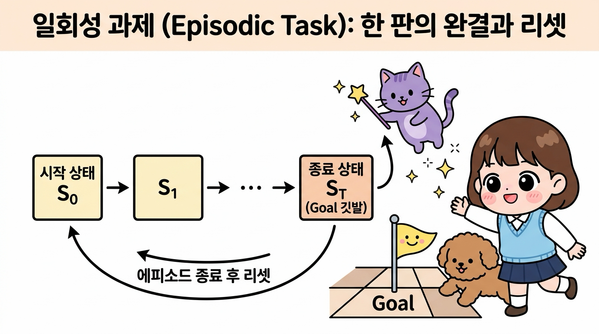
그림 05-3-3 일회성 과제(Episodic Task): 시작 상태 S0에서 종료 상태 ST까지의 한 판(에피소드) 완결과 환경 리셋 구조
- 에피소드(Episode): 시작 상태 S0에서 출발하여 종료 상태 ST에 도달할 때까지 에이전트가 겪은 모든 (상태, 행동, 보상)의 한 판 경험 시퀀스를 의미합니다.
(S0, A0, R0, S1, A1, R1, …, ST) - 종료 상태 (Terminal State, ST): 에이전트의 목표 달성(Goal 도달), 실패(게임 오버), 정해진 제한 시간 초과 등으로 상호작용이 완결되는 특별한 상태입니다.
- 종료 후 리셋: 에피소드가 끝나면 환경은 초기 상태로 완전히 리셋되어 새로운 에피소드를 시작합니다.
- 대표 예시: 바둑(승패 결정 시 종료), 체스, 슈퍼 마리오 게임, 미로 탈출(Goal 칸 도착 시 종료).
05.3.1.2 지속적 과제 (Continuous Task)
지속적 과제는 인위적인 ‘끝’이나 종료 상태가 없이 시간 t → ∞ 로 영원히 이어지는 문제입니다.
🐶 토토: “멍멍! 그럼 멈추지 않고 24시간 계속 돌아가는 로봇 공장이나 자동 온도 조절기는 끝이 없는 거야?”
🧚 지니: “맞아 토토야! 공장 자동화나 로봇의 균형 제어처럼 정해진 끝(종료 상태) 없이 시간(t)이 무한히 흘러가며 실시간으로 최적의 행동을 계속 내려야 하는 문제를 지속적 과제(Continuous Task)라고 부른단다!”
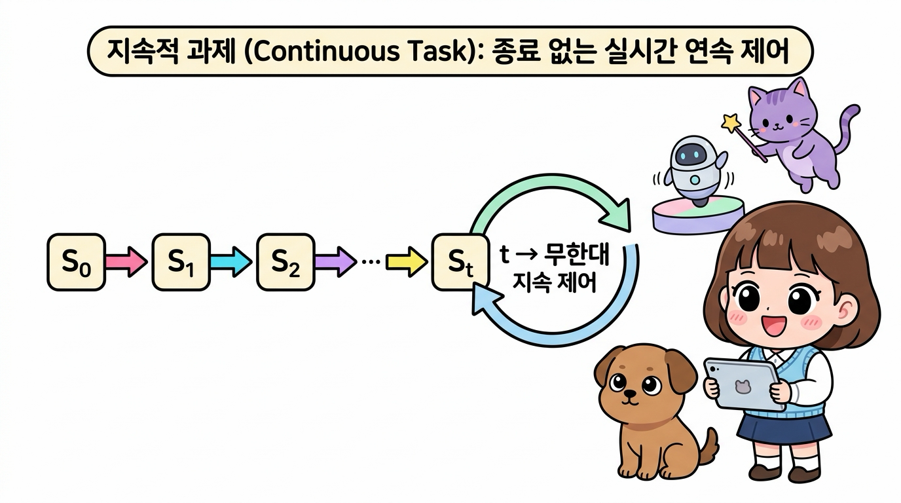
그림 05-3-4 지속적 과제(Continuous Task): 종료 상태 없이 시간 t → ∞ 로 영원히 이어지는 실시간 연속 제어 구조
- 특징: 에이전트는 멈추지 않고 실시간으로 상태를 관찰하며 끝없는 제어 결정을 내려야 합니다.
- 대표 예시: 스마트 팩토리의 재고 관리(품절과 과재고를 방지하며 영구 운영), 데이터센터 냉각 전력 최적 제어, 화학 플랜트의 연속 공정 제어, 로봇의 자세 균형 제어.
05.3.1.3 두 과제의 비교와 통합 표기법
| 구분 | 일회성 과제 (Episodic Task) | 지속적 과제 (Continuous Task) |
|---|---|---|
| 종료 상태 (Terminal State) | 명확히 존재 (시간 T에서 종료) | 존재하지 않음 (시간 t → ∞) |
| 학습 단위 | 에피소드(Episode) 단위로 완결 및 리셋 | 실시간 연속 흐름 (중단 없는 영구 제어) |
| 보상 합산 방식 | 유한 합 (할인율 없이도 수렴 가능) | 무한 급수 (할인율 γ < 1 필수) |
| 대표적인 사례 | 바둑, 체스, 아케이드 게임, 미로 탈출 | 로봇 자세 제어, 스마트 팩토리, 전력망 제어 |
💡 지니의 보너스 팁: 흡수 상태(Absorbing State)를 통한 통합
“일회성 과제에서 종료 상태 ST에 도달했을 때, 그 상태에서 스스로에게만 전이되며(전이 확률 1.0) 영원히 보상 0을 지급하는 특별한 ‘흡수 상태(Absorbing State)’로 생각하면, 일회성 과제도 무한한 지속적 과제의 수식 체계 안으로 완벽하게 통합하여 다룰 수 있단다!”
05.3.2 수익(Return)과 할인율 (Discount Factor, γ)
강화학습에서 에이전트가 극대화해야 하는 최종 목표는 단 한 번의 즉각적인 보상 Rt가 아니라, 앞으로 받게 될 모든 보상들의 총합인 수익(Return, Gt)입니다.
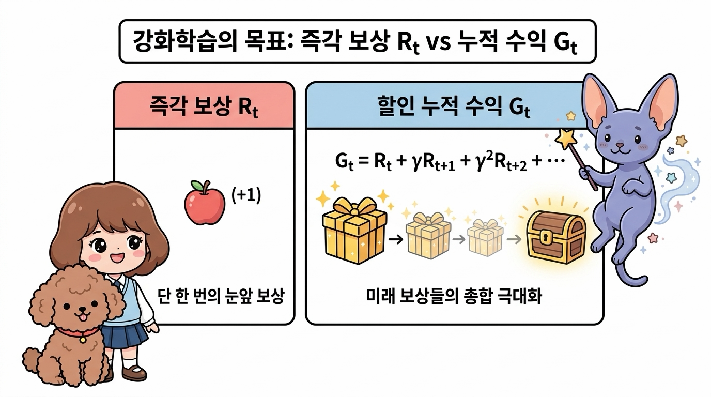
그림 05-3-5 강화학습의 목표 비교: 눈앞의 1회성 즉각 보상 Rt vs 미래 보상들을 할인하여 합산한 총수익 Gt
05.3.2.1 할인 누적 보상 수익 Gt의 정의
시간 t 이후 에이전트가 획득하는 할인 수익 Gt는 다음과 같이 정의됩니다.
\[G_t = R_t + \gamma R_{t+1} + \gamma^2 R_{t+2} + \gamma^3 R_{t+3} + \dots = \sum_{k=0}^{\infty} \gamma^k R_{t+k}\]👧 도로시: “지니야! 오늘 받는 사과는 온전히 1.0배이지만, 한 스텝 뒤에 받는 사과는 0.9배, 두 스텝 뒤는 0.81배로 점점 줄여서 모두 더하는 게 바로 수익(Gt)인 거지?”
🧚 지니: “맞아 도로시야! 미래의 보상 상자에 시간의 거리만큼 할인율 γ를 거듭제곱(γ, γ2, γ3…)하여 모두 더한 총합이 바로 에이전트가 극대화해야 할 진짜 점수, 할인 수익 Gt란다!”
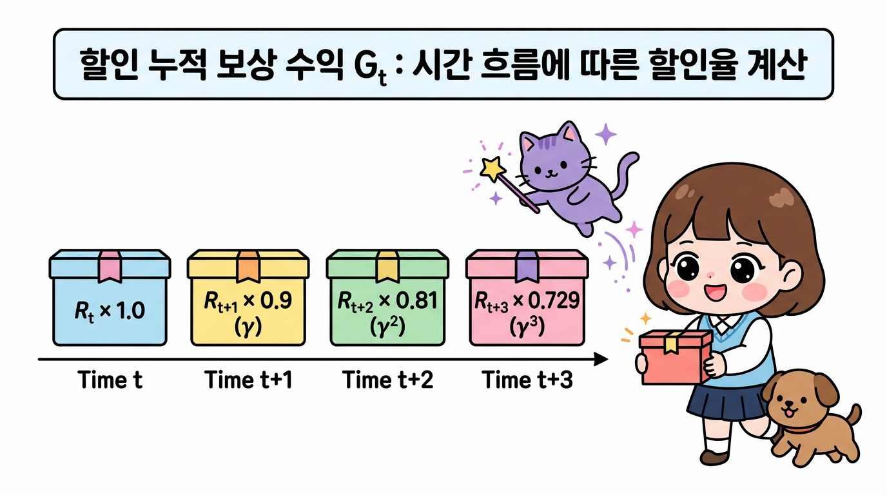
그림 05-3-6 할인 누적 보상 수익 Gt: 시간 흐름(Time t, t+1, t+2, t+3)에 따른 할인율(γ = 0.9) 적용과 보상 상자 가치 합산 원리
Gt 구조 알아 보기
- Gt: 시간 t 시점에서 바라본 미래 총 누적 가치(Return)
- γ (감마, gamma): 할인율(Discount Factor)로서 0 ≤ γ < 1 범위의 상수 (보통 0.9 ~ 0.99 사용)
만약 γ = 0.9 라면, 할인 누적 수익 Gt는 다음과 같이 전개됩니다: \(G_t = R_t + 0.9 \cdot R_{t+1} + 0.81 \cdot R_{t+2} + 0.729 \cdot R_{t+3} + \dots\)
예시로 알아 보기
👧 도로시: “스텝이 지날 때마다 할인율이 γ × γ × γ × … 처럼 거듭제곱되니까, 시간이 흐를수록 미래 보상의 영향력이 점점 작아지는 거구나!”
🧚 지니: “맞아 도로시야! 이 기하급수적 감쇠 구조 덕분에 에이전트는 눈앞의 확실한 보상을 우선적으로 챙기면서도, 먼 미래의 보물상자도 완전히 잊지 않고 균형 있게 전략을 세울 수 있단다!”
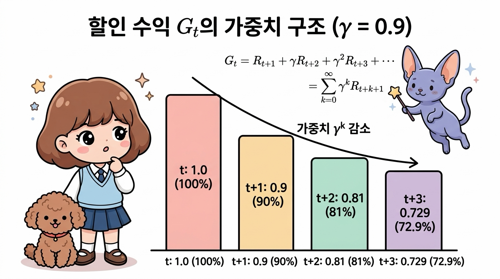
그림 05-3-7 할인 누적 수익 Gt의 가중치 감쇠 구조(γ = 0.9): 스텝이 멀어질수록 γk 비율로 보상 가치가 지수적으로 감소하는 원리
스텝별 가중치(γk)의 지수적 감소:
- 현재 시점 (k=0, t): γ0 = 1.0 → 오늘 받는 보상 Rt는 100% 가치 그대로 온전히 반영됩니다.
- 1스텝 뒤 (k=1, t+1): γ1 = 0.9 → 내일 받는 보상 Rt+1은 90%의 가치로 할인됩니다.
- 2스텝 뒤 (k=2, t+2): γ2 = 0.81 → 모레 받는 보상 Rt+2는 81%의 가치로 할인됩니다.
- 3스텝 뒤 (k=3, t+3): γ3 = 0.729 → 3스텝 뒤 보상 Rt+3은 72.9%의 가치로 점차 줄어듭니다.
왜 수익이 Return 인데, Gt 인가요?
수익은 영어로 Return인데, 왜 앞 글자 R을 쓰지 않고 알파벳 Gt를 사용할까요? 많은 입문자들이 가장 궁금해하는 질문 중 하나입니다!
👧 도로시: “아하! Return의 R은 이미 오늘 먹는 사과 보상(Rt)이 차지하고 있었구나! 그래서 미래의 보물들을 싹 모은 ‘진짜 총이득(Gain)’이라는 뜻으로 Gt를 쓰는 거네?”
🧚 지니: “정답이야 도로시! ‘눈앞의 사과 한 입(R)’과 ‘모험 끝에 얻을 커다란 보물 주머니(G)’를 명쾌하게 구분하기 위한 전 세계 강화학습 학자들의 지혜로운 약속이란다!”
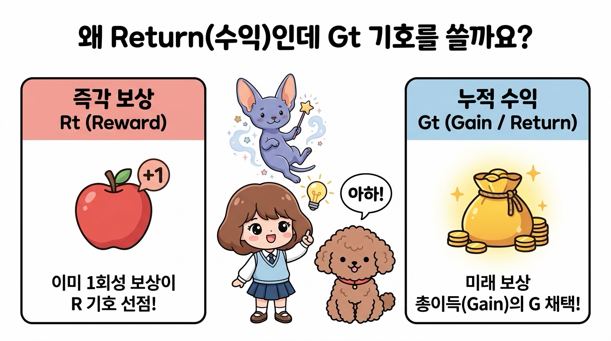
그림 05-3-8 수익의 기호가 Gt인 이유: 즉각 보상 Rt(Reward)와의 기호 충돌 방지 및 미래 총이득(Gain)의 의미
-
보상(Reward, R) 기호와의 충돌 방지:
강화학습에서는 이미 매 스텝마다 환경으로부터 즉각적으로 지급받는 1회성 보상을 보상(Reward, Rt)으로 표기하고 있습니다. 만약 수익(Return)에도 R을 사용한다면 한 입 먹는 사과 보상 Rt와 미래 보상의 총합 Rt가 서로 충돌하여 수식을 전개할 수 없게 됩니다. -
총이득을 뜻하는 ‘Gain’의 머리글자 G:
강화학습의 교과서(Sutton & Barto)에서는 보상들의 누적 총합을 에이전트가 최종적으로 획득하는 ‘총이득(Gain)’으로 정의하여 머리글자 G를 표준 기호로 채택했습니다. 금융 및 투자 분야에서도 투자의 결과로 회수하는 총이득을 ‘Gain’으로 부르는 것과 같은 이치입니다.
05.3.2.2 수익의 점화식 (재귀적 관계)
수익 Gt의 식을 가만히 들여다보면 매우 강력하고 아름다운 수학적 성질을 발견할 수 있습니다.
바로 현재 시점의 수익 Gt와 다음 시점의 수익 Gt+1 사이의 재귀적 관계(Recursive Relation)입니다.
\[\begin{aligned} G_t &= R_t + \gamma ( R_{t+1} + \gamma R_{t+2} + \gamma^2 R_{t+3} + \dots ) \\ G_t &= R_t + \gamma G_{t+1} \end{aligned}\]👧 도로시: “와! 내일 시점의 미래 누적 수익 상자(Gt+1)를 통째로 가져와서 할인율 γ만 곱한 뒤, 오늘 당장 받은 사과(Rt)와 더해주면 오늘 시점의 총수익(Gt)이 바로 완성되는 거네?”
🧚 지니: “정확해 도로시! 이 단순하고 명쾌한 재귀식(Gt = Rt + γGt+1)이 바로 다음 장에서 배울 강화학습의 심장, 벨만 방정식(Bellman Equation)을 탄생시키는 위대한 출발점이란다!”
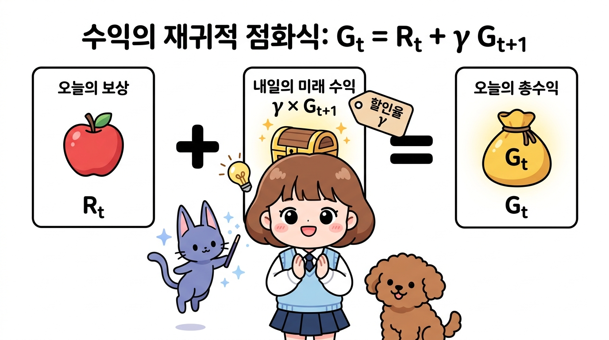
그림 05-3-9 수익의 재귀적 점화식(Gt = Rt + γGt+1): 오늘의 즉각 보상 Rt에 내일의 미래 총수익 Gt+1을 할인율 γ로 감싸 합산하는 핵심 원리
05.3.2.3 할인율 γ를 도입하는 2가지 결정적 이유
👧 도로시: “지니야! 왜 미래에 받을 보상은 γ를 곱해서 깎아버리는 거야? 미래의 보상도 100% 다 받으면 안 돼?”
🧚 지니: “아주 날카로운 질문이야 도로시! 할인율 γ를 넣는 데는 2가지 중요한 이유가 있어!”
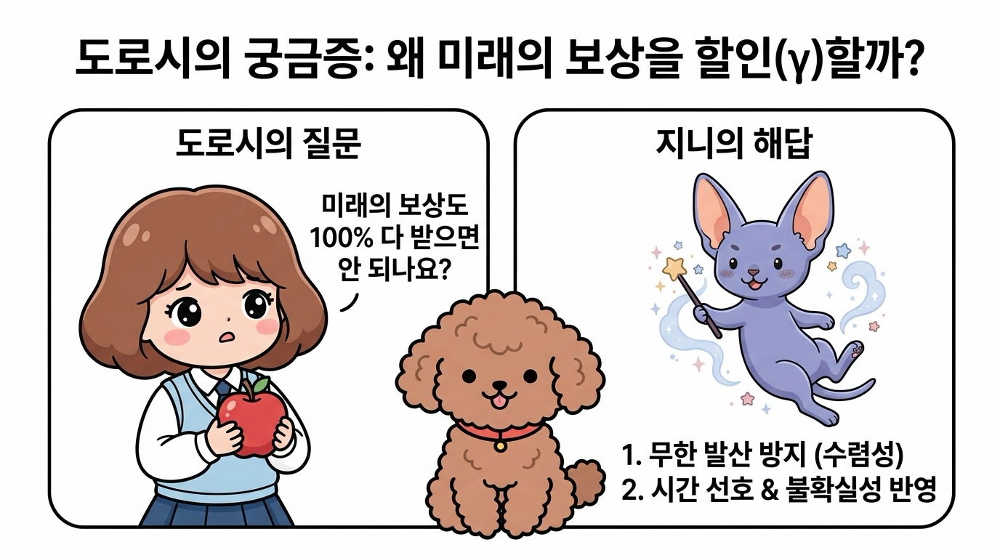
그림 05-3-10 도로시의 궁금증과 지니의 해답: 왜 미래의 보상을 할인(γ)할까?
1. 수학적 무한 발산 방지 (Convergence)
끝없이 이어지는 지속적 과제에서 만약 γ = 1.0(무할인)이라면, 매 스텝마다 +1의 보상을 받을 때 총합 Gt = 1 + 1 + 1 + … = ∞ (무한대)가 되어버립니다. 무한대끼리는 어떤 정책이 더 우수한지 크기를 비교할 수 없습니다.
하지만 γ < 1 이면 무한 등비급수의 합 공식에 의해: \(G_t = \sum_{k=0}^{\infty} \gamma^k R_{t+k} \le R_{\max} \sum_{k=0}^{\infty} \gamma^k = \frac{R_{\max}}{1 - \gamma}\)
항상 유한한 값으로 깔끔하게 수렴하므로 수학적 계산과 최적화가 가능해집니다. \(R_{\max} = 1, \quad \gamma = 0.9 \implies G_t \le \frac{1}{1 - 0.9} = \frac{1}{0.1} = 10.0\)
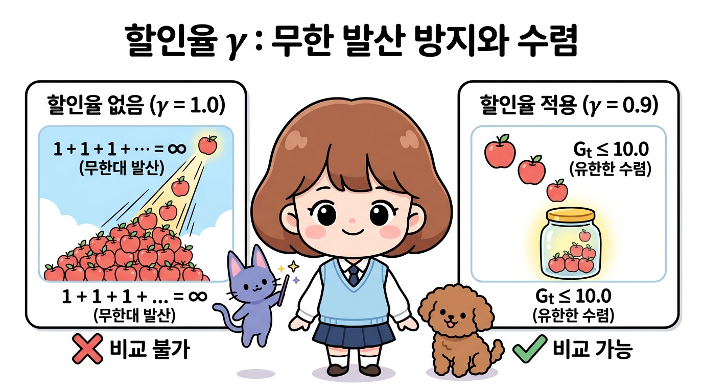
그림 05-3-11 할인율 γ에 의한 수학적 무한 발산 방지: 무할인(γ = 1.0) 시 무한대 발산(비교 불가) vs 할인율 적용(γ = 0.9) 시 유한한 값(Gt ≤ 10.0)으로의 안정적 수렴
2. 시간 선호와 미래의 불확실성 반영 (Time Preference & Uncertainty)
“오늘 당장 받는 1만 원”과 “10년 뒤에 받는 1만 원”은 가치가 다릅니다. 미래는 예측하기 어려운 돌발 상황(환경의 변화, 배터리 방전, 조기 종료 등)이 존재하므로, 합리적인 에이전트는 가까운 시점의 확실한 보상을 먼 미래의 불확실한 보상보다 더 높은 가치로 평가해야 합니다.
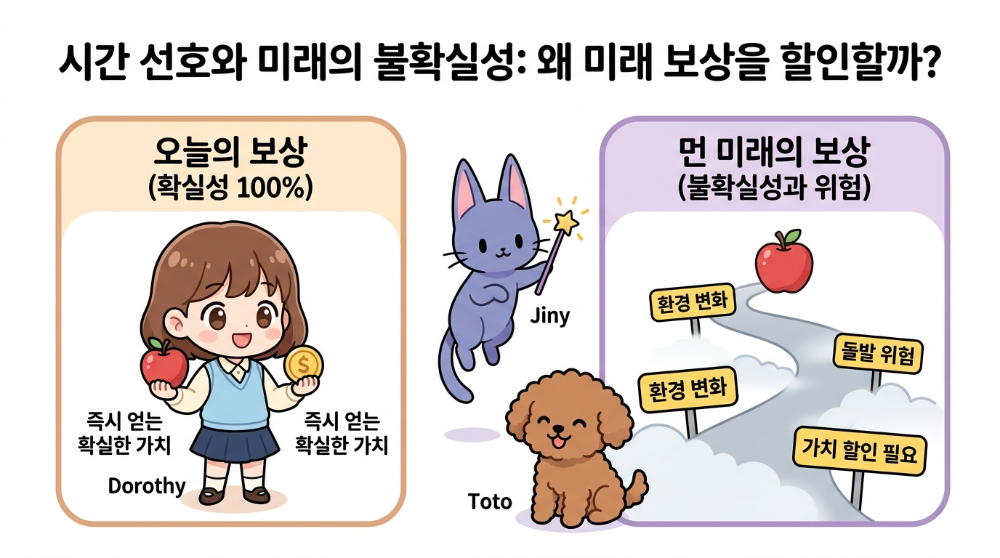
그림 05-3-12 시간 선호와 미래의 불확실성: 오늘 즉시 받는 확실한 보상(높은 가치) vs 시간 경과에 따른 위험(환경 변화, 방전 등)으로 인해 가치가 할인(γ)되는 먼 미래의 보상
05.3.2.4 할인율 크기에 따른 에이전트의 성향 비교
- γ = 0 (근시안적 에이전트, Myopic Agent): 미래 보상을 전혀 고려하지 않고 오직 현재 스텝의 즉각 보상(Gt = Rt)에만 반응합니다. 당장 눈앞의 사탕 하나에 현혹되어 먼 미래의 거대한 위험이나 더 큰 보상을 놓치기 쉽습니다.
- γ → 1 (원시안적 에이전트, Farsighted Agent): 먼 미래의 보상도 현재 가치와 거의 대등하게 높이 평가합니다(예: γ = 0.99). 지금 당장의 작은 손해를 감수하더라도 먼 훗날의 거대한 보물상자를 쟁취하기 위해 장기적인 전략을 세웁니다.
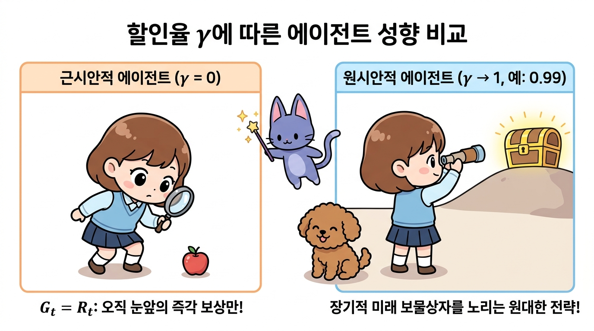
그림 05-3-13 할인율 크기에 따른 에이전트의 행동 성향 비교: 오직 눈앞의 즉각 보상에만 집착하는 근시안적 에이전트(γ = 0) vs 먼 미래의 거대한 보물상자를 목표로 장기 전략을 세우는 원시안적 에이전트(γ → 1)
05.3.3 상태 가치 함수 (State-Value Function)
에이전트의 행동과 환경의 상태 전이는 확률적일 수 있으므로, 똑같은 상태 s에서 출발하더라도 매 에피소드마다 실제로 얻게 되는 수익 Gt의 값은 조금씩 다를 수 있습니다.
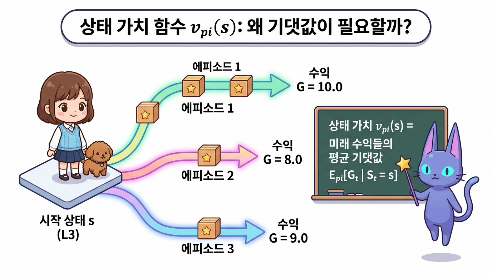
그림 05-3-14 상태 가치 함수(State-Value Function)의 개념: 동일한 시작 상태 s에서 출발해도 매번 다른 수익 Gt가 나오는 확률적 환경과 기댓값의 필요성
05.3.3.1 상태 가치 함수 vπ(s)의 수학적 정의
상태 가치 함수 vπ(s)는 ‘에이전트가 상태 s에서 출발하여 정책 π를 따라 끝까지 움직였을 때 기대할 수 있는 할인 누적 수익의 평균 기댓값(Expected Return)’입니다.
\[v_\pi(s) = \mathbb{E}_\pi [ G_t \mid S_t = s ]\]👧 도로시: “지니야! 똑같은 L3 타일에서 출발해도 바람이 불거나 주사위를 굴리는 것(확률적 정책)에 따라 매번 얻는 총 수익(Gt)이 조금씩 달라질 수 있잖아! 그럼 이 타일의 진짜 가치는 어떻게 매겨?”
🧚 지니: “맞아 도로시야! 그래서 수많은 에피소드를 반복해서 얻은 미래 수익들의 통계적 평균 기댓값(Expectation, 𝔼π)을 구하는 거야! 이것이 바로 그 땅의 진짜 잠재적 가치를 나타내는 상태 가치 함수 vπ(s)란다!”
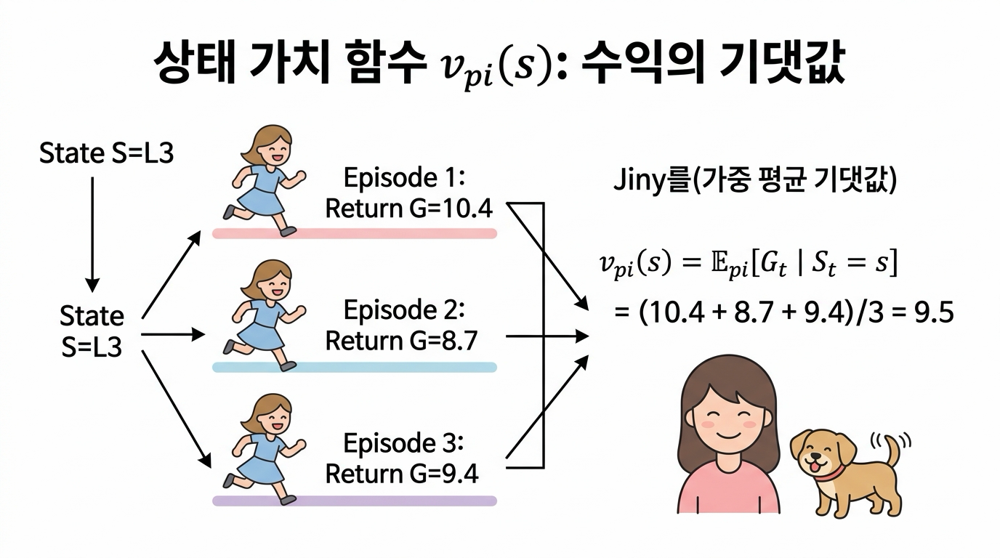
그림 05-3-15 상태 가치 함수 vπ(s): 동일한 상태 s에서 출발한 여러 에피소드 수익들의 통계적 가중 평균 기댓값 계산 구조
- 𝔼π (익스펙테이션, Expectation): 정책 π를 따를 때 발생하는 모든 가능한 경로 확률 가중 평균(기댓값) 연산자입니다.
- 정책 종속성: 에이전트가 무슨 정책 π를 쓰느냐에 따라 미래 경로와 보상이 완전히 바뀌므로, 가치 함수 아래첨자에 반드시 정책 기호 π를 명시합니다.
05.3.4 최적 정책(π*)과 최적 가치 함수(v*)
이제 강화학습의 궁극적인 지향점인 최적 정책을 정의할 수 있습니다.
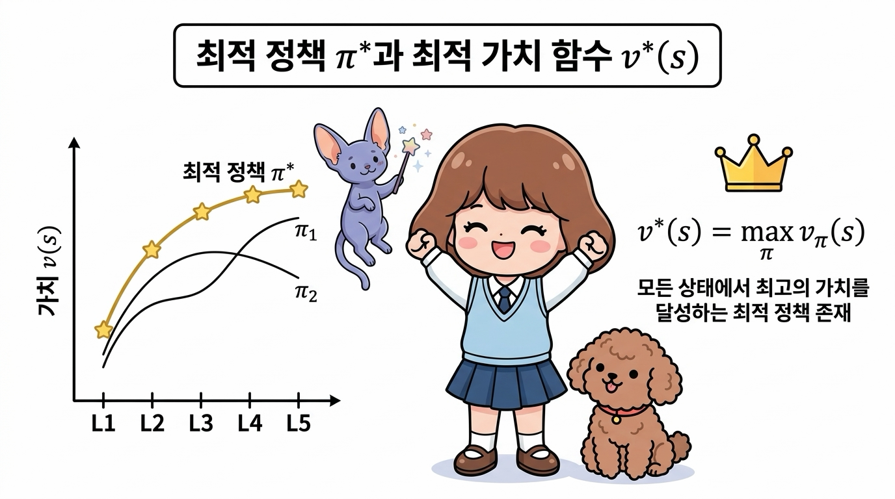
그림 05-3-16 정책 간의 부분 순서 비교 및 모든 상태에서 최대 가치를 달성하는 결정적 최적 정책 π*
05.3.4.1 정책의 우열 비교 (Partial Ordering)
두 정책 π와 π’의 우열은 모든 상태 s에서의 가치 함수 크기로 판정합니다.
\[\pi \ge \pi' \iff v_\pi(s) \ge v_{\pi'}(s), \quad \forall s \in \mathcal{S}\]👧 도로시: “지니야! 두 정책 중에서 어떤 정책이 더 똑똑한지 어떻게 비교해? 어떤 칸에서는 1등이고 다른 칸에서는 2등이면 어떡하지?”
🧚 지니: “아주 날카로운 지적이야 도로시! 정책 간의 우열을 가리려면 모든 가능한 상태(칸) s에서 단 한 번도 뒤처지지 않고 가치가 크거나 같아야(∀s, vπ(s) ≥ vπ’(s)) 비로소 더 우수한 정책(π ≥ π’)이라고 판정할 수 있단다!”
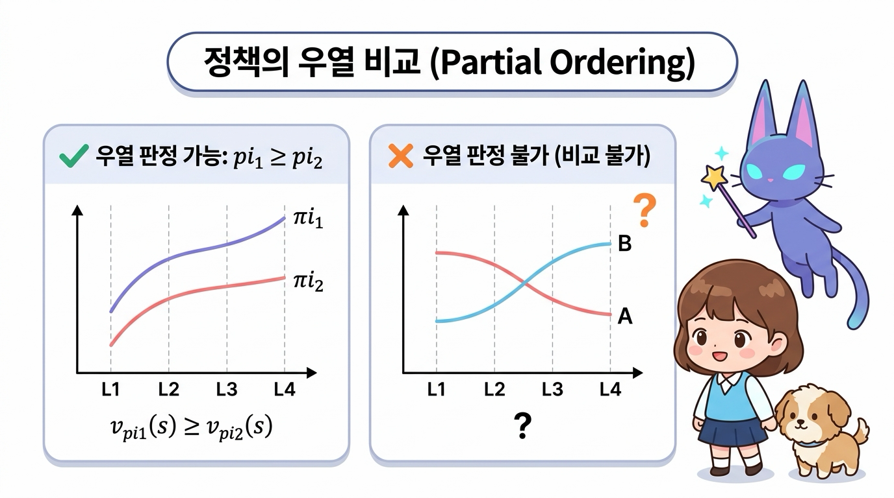
그림 05-3-17 정책의 우열 비교(Partial Ordering): 모든 상태에서 가치 곡선이 항상 위에 있어야 우열 판정 가능(π1 ≥ π2) vs 상태마다 가치 곡선이 교차하면 비교 불가
- 어떤 상태에서는 π가 좋고 다른 상태에서는 π’가 좋다면 두 정책 간의 우열을 가릴 수 없습니다 (비교 불가 상태).
- 모든 가능한 상태 s에 대하여 항상 vπ(s) ≥ vπ’(s)를 만족할 때만 “정책 π가 π’보다 우수하다”고 선언합니다.
05.3.4.2 최적 정책 π*과 최적 상태 가치 함수 v*(s)
존재하는 모든 가능한 정책들 중에서 가장 높은 가치를 주는 최고의 정책을 최적 정책(Optimal Policy, π*)이라고 합니다.
\[v_*(s) = \max_\pi v_\pi(s), \quad \forall s \in \mathcal{S}\]👧 도로시: “지니야! 그럼 세상에 존재하는 수많은 정책들 중에서 모든 상태에서 최고의 점수를 달성하는 단 하나의 왕관 정책이 바로 최적 정책(π*)인 거지?”
🧚 지니: “정답이야 도로시! 모든 상태 s에서 가장 큰 가치를 뽑아내는 최적 가치 함수 v*(s) = maxπ vπ(s)를 달성하는 결정적 최적 정책 a = μ*(s)가 항상 존재한단다!”
MDP의 3대 핵심 정리
강화학습 이론에서 MDP가 강력한 해법을 가질 수 있는 이유는 다음 3가지 수학적 핵심 정리(Theorems)가 든든하게 뒷받침해주기 때문입니다.
-
최적 정책의 존재성 (Existence of Optimal Policy): 모든 유한 MDP(Finite MDP)에는 다른 어떤 정책과 비교해도 모든 상태에서 뒤처지지 않는 최적 정책 π*가 최소한 하나 이상 반드시 존재합니다 ($\exists \pi_* \text{ s.t. } \pi_* \ge \pi, \; \forall \pi$). 어떤 상태는 A가 좋고 다른 상태는 B가 좋아 1등을 가릴 수 없는 ‘비교 불가’의 늪에 빠지지 않고, 모든 상태에서 동시에 최고인 왕관 정책이 항상 보장됩니다.
-
공통의 최적 가치 함수 공유 (Unique Optimal Value Function): 최적의 경로가 여러 갈래일 수 있으므로 최적 정책 π* 자체는 여러 개 존재할 수 있습니다 (예: 왼쪽으로 도나 오른쪽으로 도나 똑같이 최소 걸음으로 도착하는 경우). 하지만 이들이 달성하는 최적 가치 함수 v*(s)는 유일하게 하나로 완벽히 동일합니다.
-
결정적 최적 정책의 존재 (Existence of Deterministic Optimal Policy): 여러 최적 정책 중에는 동전을 던져 확률적으로 행동을 고를 필요 없이, 각 상태 s마다 단 하나의 최선의 행동만을 100% 확정하여 선택하는 결정적 최적 정책 a = μ*(s)가 반드시 포함되어 있습니다. 따라서 에이전트는 복잡한 확률 탐색 없이 깔끔한 규칙 표(Lookup Table) 하나만으로도 완벽하게 제어할 수 있습니다.
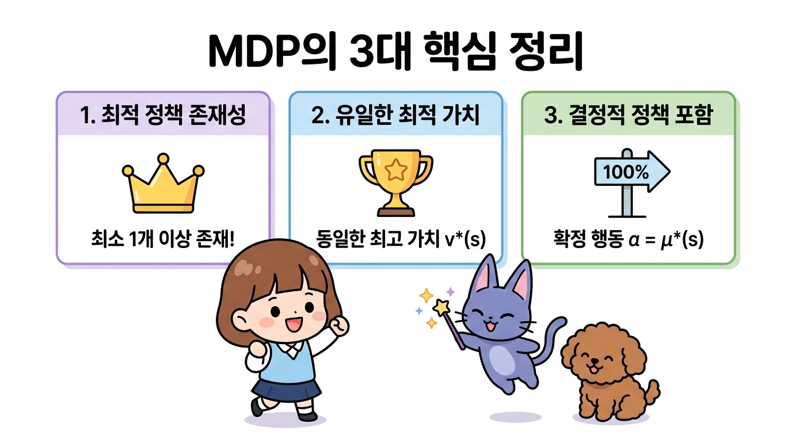
그림 05-3-18 MDP의 3대 핵심 정리: 최적 정책의 존재성(최소 1개 이상 존재), 유일한 최적 가치 함수 v*(s) 공유, 100% 확정 행동을 선택하는 결정적 최적 정책(a = μ*(s))의 보장
👧 도로시: “와! 아무리 넓고 복잡한 미로 세상이라도 무조건 1등 정책(π*)이 존재하고, 최고 점수(v*)는 딱 하나로 정해져 있으며, 심지어 주사위를 굴릴 필요 없이 확정된 행동(a = μ*(s))만 하면 된다는 거네?”
🧚 지니: “정답이야 도로시! 이 3대 정리가 든든하게 증명되어 있기 때문에, 다음 장부터 배울 벨만 최적 방정식과 Q-러닝 같은 알고리즘들이 안심하고 100% 최고의 해답을 찾아낼 수 있는 거란다!”
05.3.5 핵심 요약
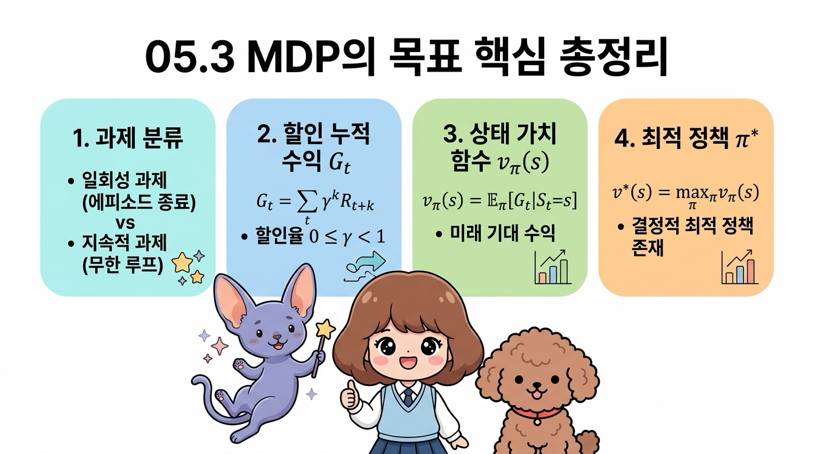
그림 05-3-19 05.3 MDP의 목표 핵심 총정리: 과제 분류, 할인 누적 수익 Gt, 상태 가치 함수 vπ(s), 최적 정책 π*
- 과제 분류: 명확한 종료 상태와 리셋이 있는 일회성 과제(Episodic)와 끝없이 연속 제어를 수행하는 지속적 과제(Continuous)로 구분됩니다.
- 할인율 (0 ≤ γ < 1): 무한한 시간 단계에서 기대 수익이 발산하는 것을 막고, 가까운 미래 보상의 가치를 합리적으로 반영합니다.
- 할인 누적 수익 Gt: 시간 t부터 미래에 획득할 보상들의 할인 총합 Gt = Σk=0∞ γk Rt+k 이며, 재귀식 Gt = Rt + γGt+1 성질을 갖습니다.
-
상태 가치 함수 vπ(s): 상태 s에서 정책 π를 따를 때 얻게 되는 미래 기대 수익 vπ(s) = 𝔼π[Gt St = s] 입니다. - 최적 정책 π*: 모든 상태에서 가치 함수를 극대화하는 왕관의 정책이며, 항상 결정적 형태 a = μ*(s)로 존재합니다.
다음 05.4절에서는 구체적인 2-그리드 월드 예제를 통해 실제로 4가지 결정적 정책들의 가치를 손으로 직접 계산하고 비교해 보겠습니다!